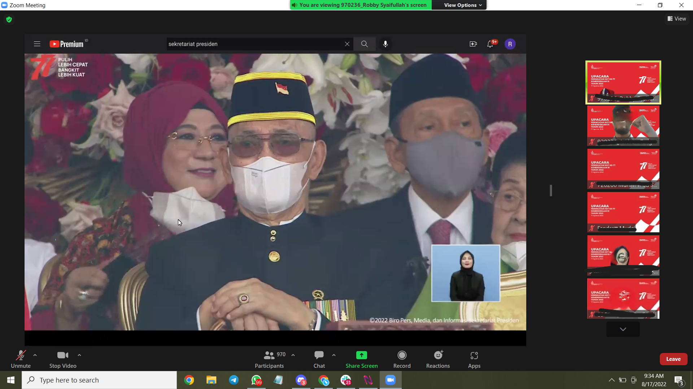
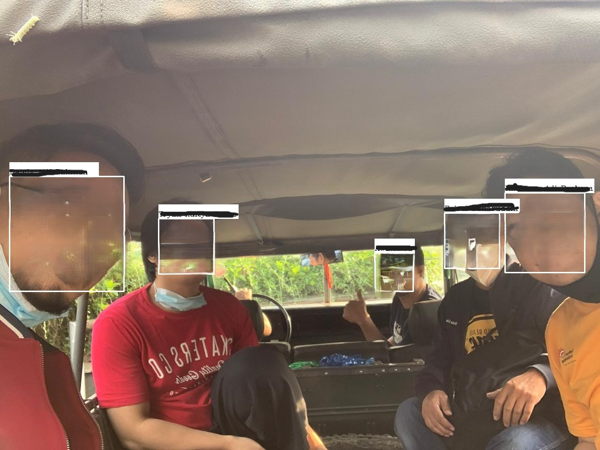

Problem
Telkom needed a system to map and recognise employee faces from various attendance photo sources, including Zoom screenshots and on-site photos. The real-world dataset was messy:
- Varied formats: images came from virtual (Zoom) and direct (on-site) attendance with inconsistent naming and backgrounds.
- Labeling issues: many photos lacked proper filenames (no NIK or full name), making face-to-identity mapping difficult.
- Technical constraints: DLIB-based recognition hit memory limits, and inaccurate detections led to mismatches.
My Contribution
Implementation
- Built a face mapping pipeline in Python with DLIB and OpenCV DNN for detection and recognition.
- Fixed filename issues so every image had both a name and NIK for matching.
- Overcame DLIB memory limits by switching to OpenCV DNN for more scalable detection.
- Designed workflows for background removal and name mapping, raising detection accuracy even in noisy group photos.
- Added fallback logic for problematic Zoom images, extracting the first detected face in a red background.

Example of a Zoom screenshot used for training (blurred for privacy).

Automated face detection and mapping on group attendance photos (blurred for privacy).
Results
- Delivered an automated face mapping API ready for internal use.
- Increased recognition accuracy on Telkom's real-world dataset despite messy labels and inconsistent input.
- Gained practical skills in troubleshooting, iterative solution design, and data cleaning for computer vision.
Key Learnings
- Requirement analysis: interpreted project specs directly from supervisor direction, adapting rapidly as requirements evolved.
- Technical adaptation: pivoted quickly between tools (DLIB, OpenCV DNN) to handle real-world constraints like memory and file formats.
- Collaboration: worked closely with the team and sought frequent feedback to stay aligned with the evolving vision.
"In real-world AI, adaptability matters more than perfection. The best models learn, just like we do."